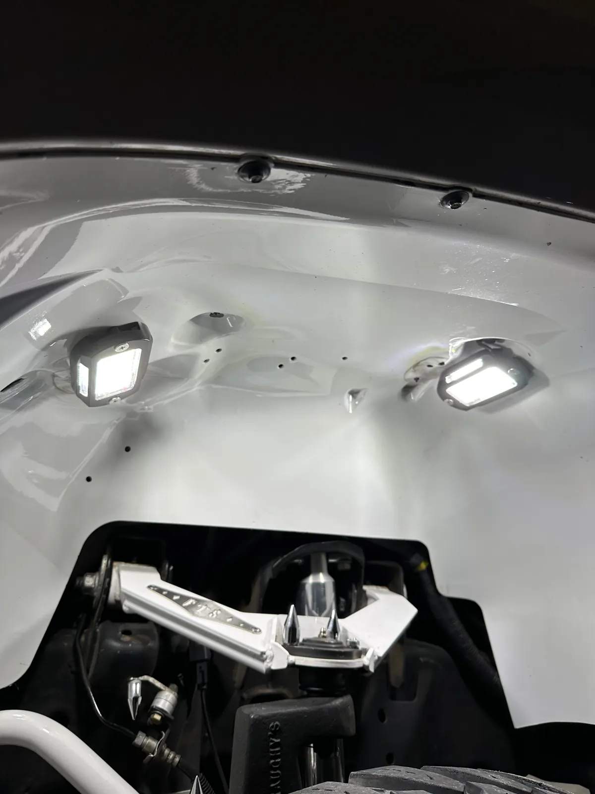
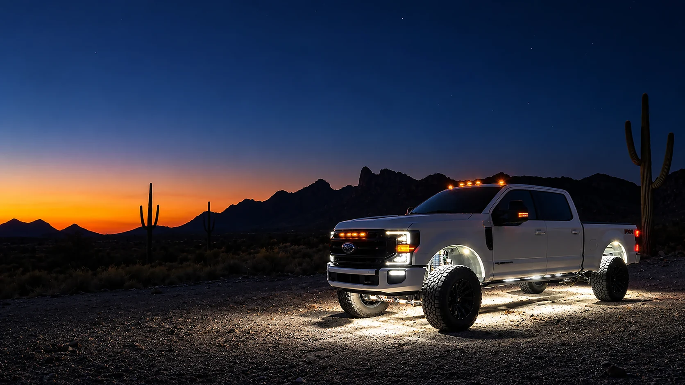

East Valley, AZ
Rock Light And Wheel Light Installs For The East Valley
ITM Customs is a lighting shop in Mesa, in the middle of the East Valley. Drivers from Gilbert, Chandler, Tempe, Queen Creek, San Tan Valley and Apache Junction drop the truck off in the morning and pick it up lit the same day. We don't do mobile installs, so every job happens at the shop, with a lifetime warranty on the install.
Shop The Lights →- Gilbert And Tempe
- 7 miles
- San Tan Valley
- 32 miles
- Installs
- At our Mesa shop
- Reviews
- 4.7★ from 35
East Valley Cities We Serve
Every pin is a city our install customers drive in from. The lines all run to Mesa, because that's where every install happens.
- Tempe7 mi · University Drive
- Gilbert7 mi · Gilbert Road
- Chandler8 mi · Arizona Avenue
- Scottsdale11 mi · Scottsdale Road, McKellips Road
- Apache Junction16 mi · Apache Trail, Main Street
- Fountain Hills19 mi · SR-87 (Beeline Highway)
- Queen Creek23 mi · Ellsworth Road, Loop 202, US-60
- Gold Canyon27 mi · US-60
- San Tan Valley32 mi · SR-24, US-60
Miles are the driving distance to central Mesa. The shop address comes with your booking confirmation.
Dark Roads From Queen Creek To The Superstitions
The far East Valley gets dark fast. Hunt Highway, the roads around San Tan Mountain Regional Park and plenty of Queen Creek streets have no streetlights, and a lot of homes out there sit on dirt driveways. Pure white rock lights show you the ground around the truck when you pull in at night, and you can leave them on for the drive home.
Apache Junction and Gold Canyon sit right under the Superstitions. The lots at Lost Dutchman State Park and the trailheads off the Apache Trail are pitch black after sunset, which is where wheel-well lights earn their keep on a truck or a side-by-side.
Getting To The Shop From Your City
Gilbert, Chandler and Tempe
Under 10 miles on surface streets. Gilbert Road, Arizona Avenue and University Drive all run straight into Mesa.
Queen Creek and San Tan Valley
SR-24 to the Loop 202, then the US-60 west. About 23 miles from Queen Creek and 32 from San Tan Valley.
Apache Junction and Gold Canyon
The US-60 west, or Apache Trail into Main Street. About 16 miles from Apache Junction.
Scottsdale and Fountain Hills
Scottsdale Road or the Beeline Highway (SR-87) south. About 11 miles from Scottsdale and 19 from Fountain Hills.
We're open Monday to Saturday, and most installs take 4 to 8 hours. The shop address comes with your booking confirmation.
What East Valley Customers Get Installed
Each service has its own page with the lights, the prices and the photos.
 Rock Lights And UnderglowPure white 72, 84, 144 and 219-chip, plus RGBW color kits.See Rock Lights And Underglow →
Rock Lights And UnderglowPure white 72, 84, 144 and 219-chip, plus RGBW color kits.See Rock Lights And Underglow → Rock Lights For TrucksLayouts from 8 to 30 lights, light by light.See Rock Lights For Trucks →
Rock Lights For TrucksLayouts from 8 to 30 lights, light by light.See Rock Lights For Trucks → Light InstallationOur lights or yours, wired right and tested with you.See Light Installation →Wheel Lights17-inch 5-row and 10-row rings with app control.See Wheel Lights →
Light InstallationOur lights or yours, wired right and tested with you.See Light Installation →Wheel Lights17-inch 5-row and 10-row rings with app control.See Wheel Lights → Side-By-Side LightsRGBW, white and switchback rock lights for UTVs.See Side-By-Side Lights →
Side-By-Side LightsRGBW, white and switchback rock lights for UTVs.See Side-By-Side Lights → Switchback Rock LightsWhite and amber in one light, 4 to 20 lights.See Switchback Rock Lights →
Switchback Rock LightsWhite and amber in one light, 4 to 20 lights.See Switchback Rock Lights → Exterior LightingPod lights, chase lights, light bars, whips, cab and mirror lights.See Exterior Lighting →
Exterior LightingPod lights, chase lights, light bars, whips, cab and mirror lights.See Exterior Lighting → Switch Panels And 12V WiringEvery light on one panel, each on its own fused circuit.See Switch Panels And 12V Wiring →
Switch Panels And 12V WiringEvery light on one panel, each on its own fused circuit.See Switch Panels And 12V Wiring →
Truck LightingEverything we put on a pickup, in one place.See Truck Lighting →What Lights And Installs Cost
Lights are priced on our site. Install labor depends on your vehicle and how many lights you want, so we quote it when we confirm your booking, before any work starts.
| What | Price | Details |
|---|---|---|
| Pure White Rock Lights | $45 to $55 | Pack of 4, 72 or 84-chip |
| 144-Chip Rock Light Kit | From $210 | Kits of 4 lights, up to 24 |
| 219-Chip Rock Light Kit | From $240 | Kits of 4 lights, up to 24 |
| Switchback Kit | From $200 | Kits of 4 lights, white and amber |
| RGBW Color Kit | From $205 | Kits of 4 lights, up to 20 |
| Wheel Lights | $380 or $499 | 5-row or 10-row, all four wheels |
| Install Labor | Quoted first | Agreed before we start |
Lit By ITM
Every build we have a story for. Swipe through, tap one to see what went on it.
- Rock Lights
- Pillar Lights


- Pillar Lights

- Chase Lights
- Switch Panel / 12V Wiring

- Rock Lights

- Wheel Lights

- Rock Lights

- Rock Lights

- Rock Lights
East Valley Questions
Do you do mobile installs in Gilbert or Queen Creek?
No. Every install is done at our shop in Mesa. Drop off in the morning and pick up the same day.
How far is the shop from San Tan Valley?
About 32 miles to central Mesa, on SR-24 and the US-60. From Queen Creek it's about 23.
Which East Valley cities do you serve?
Tempe, Gilbert, Chandler, Scottsdale, Apache Junction, Fountain Hills, Queen Creek, Gold Canyon and San Tan Valley, plus Mesa itself. Anyone who can get the truck to Mesa is welcome.
Can I drop off on the way to work?
Yes. Book a morning drop-off, Monday to Saturday, and most trucks are ready the same day.
Do you work on side-by-sides?
Yes. Trucks and side-by-sides are most of what we light, plus Jeeps and SUVs.